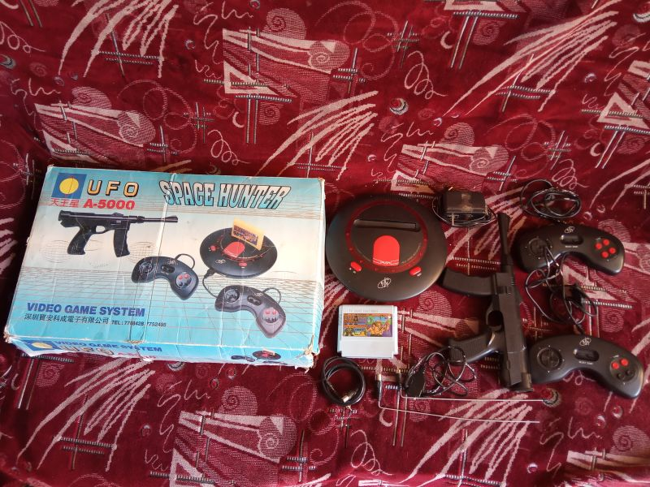

| Произведён | Незивестно |
| Процессор | ???(безкорпусный аналог MOS-6502) |
| Зеленит | Да |
| Встроенные игры | Нет |
| Количество слотов для картриджей | 1 |
| Стандарт картриджа | Японский Famicom 60 пинов |
| Звуковой процессор | Нормальный |
| Количество пинов геймпадов | 9 |
| АВ-выход | Не работает |
| Антенный выход | Работает |
UFO 天王星 A-5000 Space Hunter(бескорпусная)
UFO A-5000 Space Hunter также названная на коробке как 天王星( Уран ) - клон Nintendo Famicom, выполненный в форме летающей инопланетной тарелки. Произведен в городе Шеньжень компанией Баоан Кеченг Электроникс Ко. Тираж и годы изготовления неизвестны, судя по отсутствию информации об этой приставке в иноязычной сети интернет, данная приставка имела хождение исключительно на территории России.
Клон был куплен еще в 2013 году и его комплектация была достаточно скромной:
Консоль
Комплектующий картридж( был куплен отдельно )
Два геймпада
Световой пистолет
Антенный кабель
Две беспроводные антенны
Блок питания
Коробка сохранилась не в очень хорошем сосотянии, но по ней можно судить о месте производства - Шеньженьский Баоан Кеченг Электроникс Ко.
А также сохранились два телефона : 7788428 и 7752495
Дизайн приставки, как я понял, оригинальный. В самой приставке используются диоды, которые по идее должны светиться, на некоторых приставках светятся, а на некоторых нет. Это зависело от того является ли приставка сделанной на полноценных микросхемах или же на бескорпусном кристалле. В данном случае в нашем музее мы имеем именно бескорпусный вариант этой консоли.
В консоли используются два вида разъемов для геймпадов - два порта на 9 штырьков, и один на 15 штырьков. Это рационально, учитывая что джойстики консоли используют 9-ти пиновые геймпады, а световой пистолет 15-ти пиновые.
Плата всей внутренней начинки, как это часто бывало не монолитная, а разделенная на три отдельных
Также как и в случае с клоном BT 818, здесь используется БМК, на которой вероятно и собрано всё техническое исполнение - определить название увы нет возможности, но предполагаю что происхождение у них одно и то же.
На консоли также не работает AV-выход, это достаточно типичная проблема многих клонов, есть мнение что на самом деле он работоспособен, но даёт слабый сигнал.
Приставка при покупке не имела комплектующего картриджа, однако на коробке изображался Super Gun 20 in 1, который в дальнейшем был найден отдельно и куплен. Он также представлен в нашем музее - кликните на этот текст, чтобы посмотреть.
В комплекте также шли два геймпада, по форме они крайне необычны. Сложилось ощущение что за основу были взяты геймпады от Sega Mega Drive, но при этом дизайн был адаптирован. Качество их изготовления достаточно неплохое, интересно что на одном геймпаде кнопки черные и красные, а на втором все копки красного цвета.
Имелся также световой пистоле, который по форме больше похож на пистолет-пулемет, чем на пистолет. К сожалению он оказался неисправным.
Блок питания у этой консоли стандартный, с оригинальной полярностью - минус внутри, плюс снаружи. И мощностью 850 мА
В комплекте имелся антенный кабель, однако самое интересное было следующее
В комплекте было две беспроводные антенны, которые вставляются в слот приема сигнала телевизора, а второй в RF-выход консоли соответственно. Это позволяет играть на приставке бесповодным способом, однако радиус действия едва ли превышает один метр, дальше использовать не получается из-за сильных помех и плохого качества приёма картинки.
На данной консоли очень странным образом работает звук, не только потому что он удешевлённый, но и потому что содержит в себе что-то похожее на электрический гул.
Сама приставка была описана в моём блоге ещё в далеком 2013 году и была одним из первых обзоров, что я вообще написал, скорее всего я напишу альтернативный вариант, потому как тот обзор был всё еще достаточно плох( отсутствие опыта и прочее ):
http://superbrain1997.blogspot.com/2013/10/ufo-5000.html
И недавно был выпущен видеообзор на этот самый клон:
https://www.youtube.com/watch?v=mmiZP6z0s-8